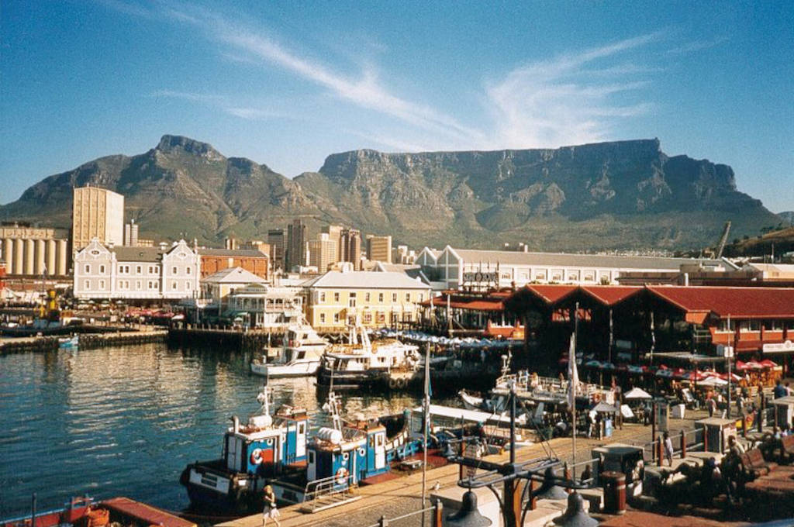

|
Wikipedia:
"Cape Town is the second-most populous city in South Africa, after
Johannesburg, and also the legislative capital of South Africa.
Colloquially named the Mother City, it is the largest city of the
Western Cape province and forms part of the City of Cape Town
metropolitan municipality. The Parliament of South Africa is situated in
Cape Town. The other two capitals are located in Gauteng (Pretoria the
executive capital where the Presidency is based) and in the Free State
(Bloemfontein the judicial capital where the Supreme Court of Appeal is
located). The city is known for its harbour, for its natural setting in
the Cape Floristic Region, and for landmarks such as Table Mountain and
Cape Point. Cape Town is home to 64% of the Western Cape's population.
The city was named the World Design Capital for 2014 by the
International Council of Societies of Industrial Design."
|

|